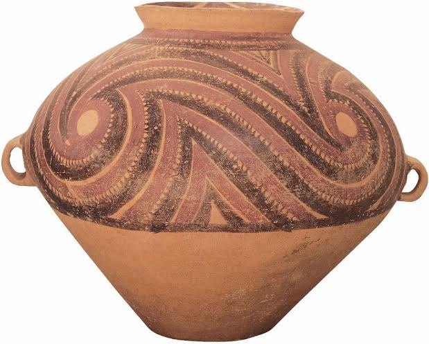
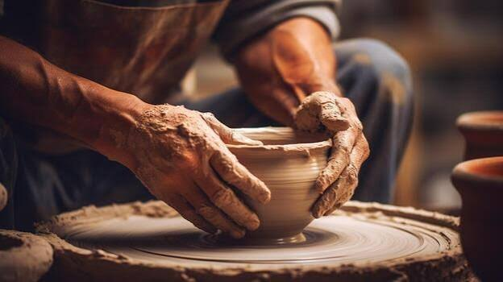
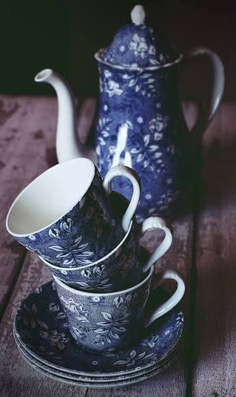
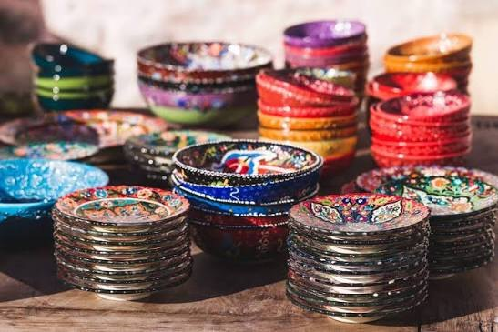

Swirl Storage Jar
Hand-painted slip swirls, burnished and fired.
Buy handmade pottery, learn the wheel from master potters, or invite an artist to create at your home. Made from local clay and fired in our own kiln.
Take a piece home, learn to make your own, or invite an artist to work in your living room.
Vases, tableware and planters thrown by hand. Shipped insured in 3 to 5 days.
Visit the shopWheel classes in the studio, online lessons you can watch anytime, and kids' clubs.
See coursesA master potter visits with a wheel and clay for a private lesson, party or live commission.
Book a visit
Every piece you buy, and every class you take, follows the same slow path from lump to vessel.
Kneaded to remove air and make it even.
Pulled into a cone, then pressed back until it spins true.
Thumbs open the pot and the walls rise.
Gentle pressure from inside gives the curve.
Dipped, brushed and fired for twelve hours.
Every piece passes through the same pair of hands from wedge to final firing.
No moulds or casting. Each form is pulled up from a single lump of stoneware.
Two firings, the second to 1,260°C, so glazes turn glassy and food safe.
Dug, dried and blended in-house. Colours vary from batch to batch, and that is intended.
Recycled, plastic-free packaging, shipped insured to your door.
A few pieces from this season. Each one is unique and ships within a week.

Hand-painted slip swirls, burnished and fired.

A teapot, four cups and saucers.

Bright glazes for everyday serving.
We dig, blend and test our own clay bodies. Hover or tap a tile to meet them.
Warm, porous and earthy. Fired low at 1,060°C. Great for planters and rustic bowls.
Our everyday clay. Dense, durable and dishwasher safe once glazed.
Pale and silky, thrown thin. Used for cups that glow when held to the light.
Rich with iron and manganese. Dramatic matte finishes with no glaze needed.
I broke my favourite mug and they mended it with gold. It is better now than when it was new.
An artist came to our home for my daughter's birthday. Twelve kids, twelve tiny bowls, zero mess.
Our dinner set arrived wrapped in paper, every plate a little different, and we love that.
Book a wheel session, commission a set, or just come and look around the studio.
Plan a visit